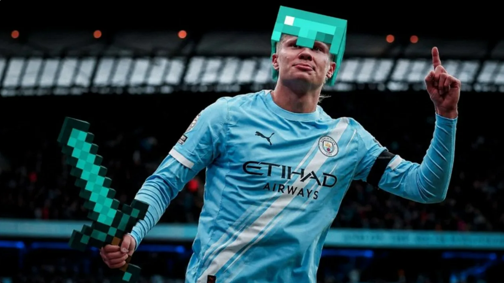
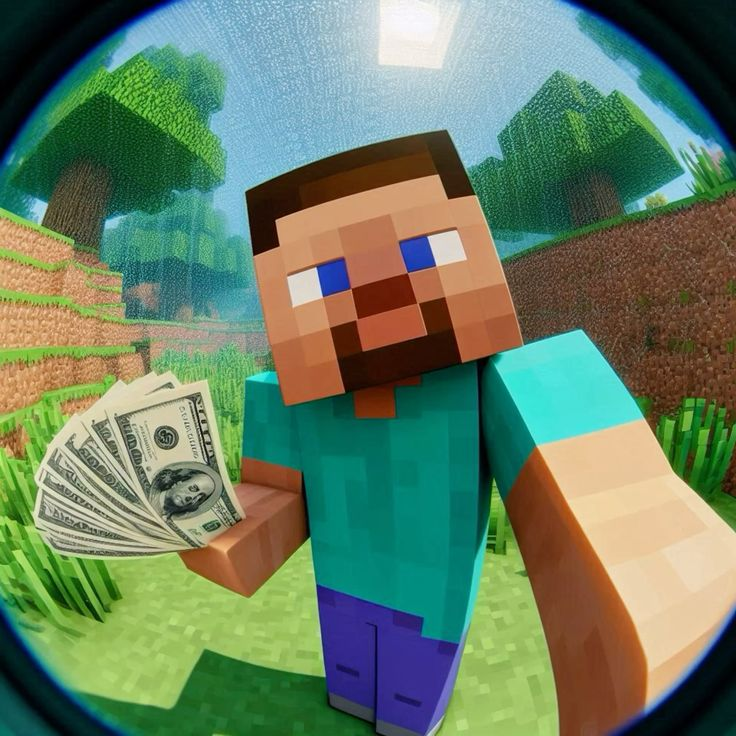
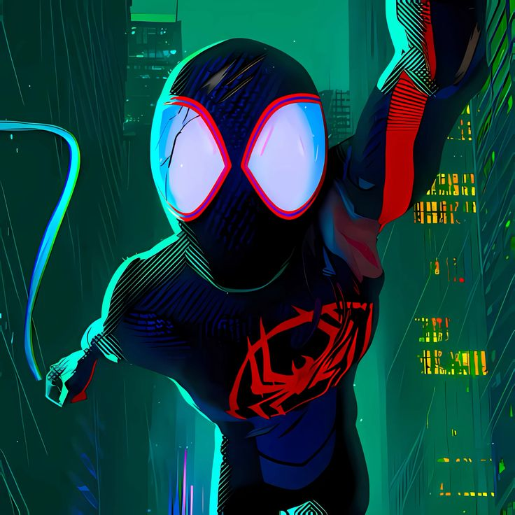
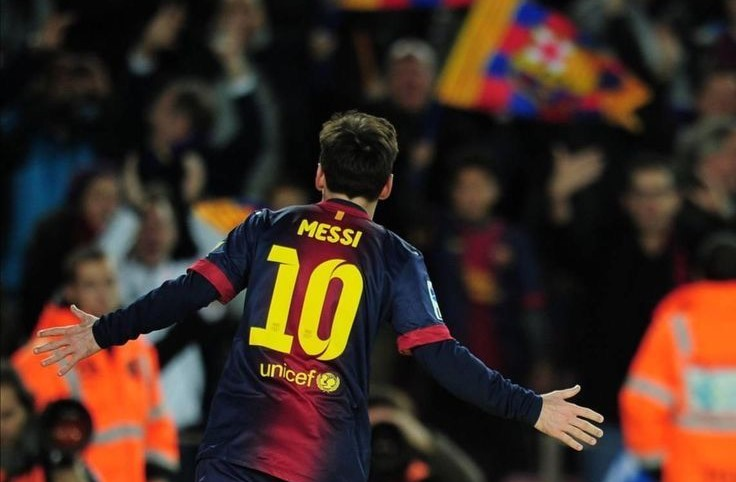
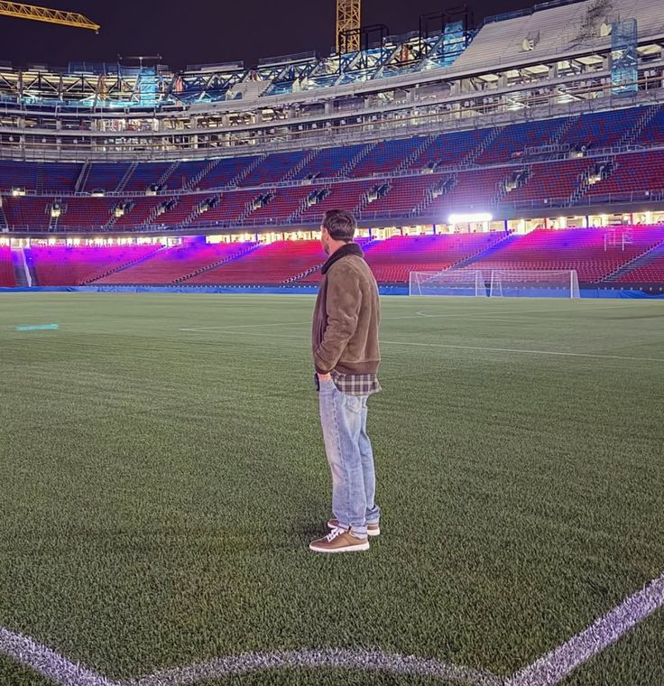
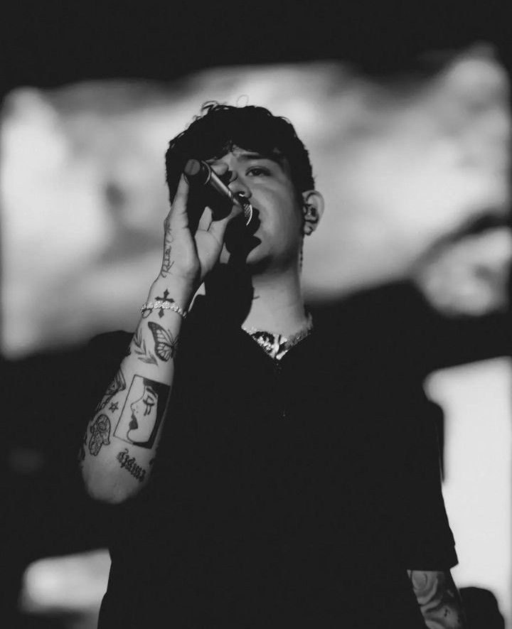
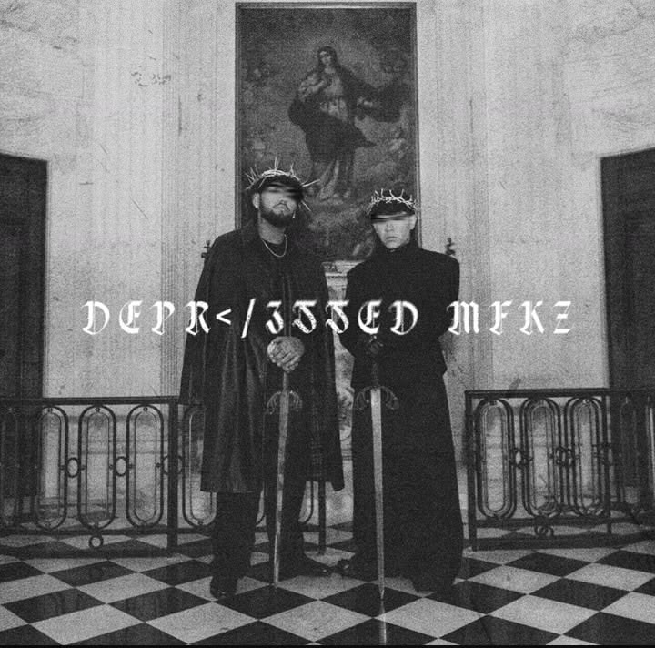
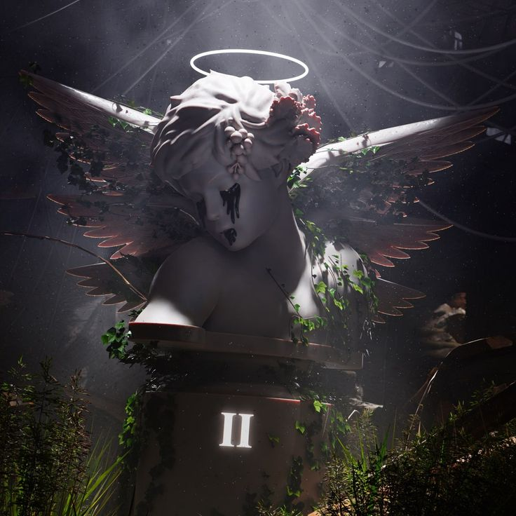

Ultimas noticias
—————————————————————————
⚽ Fútbol, Juegos, estadios virtuales y peliculas
La afición de Haaland:

El delantero noruego Erling Haaland es un gamer total. Además de ser la portada de simuladores de fútbol, confesó que su pasatiempo favorito para desconectar de la presión de la Premier League es jugar intensas partidas de Minecraft con sus amigos.
El Camp Nou en el metaverso:

Mientras el Barcelona termina las obras de su estadio real, el club lanzó una versión digital hiperrealista del Spotify Camp Nou en la plataforma Roblox, permitiendo a millones de jóvenes e hinchas geeks explorar el estadio y jugar minijuegos interactivos.
Minecraft imbatible:

• El legendario juego de cubos alcanzó un hito histórico al superar los 300 millones de copias vendidas. Con esto, se consolida oficialmente como el videojuego más vendido de todos los tiempos, aplastando a cualquier competidor.
Fecha de estreno deSpider-Man: Beyond the Spider-Verse

• Spider-Man: Beyond the Spider-Verse ya tiene una fecha de estreno fija confirmada por Sony Pictures para el 18 de junio de 2027. La producción sigue en marcha sin retrasos internos, y sus creadores la describen como la entrega más emotiva de toda la trilogía.
El GOAT se retira de su selección

Lionel Messi se retiró oficialmente de la Selección Argentina el pasado 6 de octubre de 2026 en un partido de homenaje en el Estadio Monumental, donde la Albiceleste venció 3-0 a Benín con un gol y dos asistencias del astro de 39 años. El capitán, que confesó haber tomado la decisión tras perder la final del Mundial 2026 contra España, cierra una legendaria etapa internacional con un récord histórico de 126 goles en 208 partidos y tres títulos mayores, para enfocarse ahora exclusivamente en su carrera con el Inter Miami en la MLS.
Un vistaso a Messi en barcelona

Imagen de Lionel Messi Celabrando en un partido de la UEFA Champions League, especificamnete ida de los cuartos de final contra el Shkhtar Donetsk, disputado el 6 de abril de 2011 en el Camp Nou, Barcelona, España
Messi visita el Camp Nou

El 10 de Noviembre de 2025, Lionel Messi sorprendio a todos visitando el estadio del equipo de sus amores, el cual es el Spotify Camp Nou del FC Barcelona, en el cual dijo textualmente: "Anoche volvi a un lugar que extraño con el alma" comunicó que fue un lugar que lo hizo muy feliz y donde los aficionados lo hiciseron feliz y termino diciendo que ojala algun dia volver para despedirse como jugador ya que no puso hacerlo cuando se fue.
Entre otras noticias
¡JUNIOR H HACE HISTORIA! EL ÉXITO DE SU NUEVO ÁLBUM MIENTRAS SUS CLÁSICOS SE MANTIENEN EN LA CIMA DE SPOTIFY

El fenómeno de los corridos tumbados, Junior H, sigue rompiendo todos los récords de la música mexicana. Su más reciente producción discográfica, DEPRᐸ/3$$ED MFKZ, ha tomado por asalto las listas mundiales tras su lanzamiento bajo el sello Rancho Humilde. El álbum debutó de forma espectacular en el Número 1 del Top Albums Debut Global y USA de Spotify, impulsado por el mega éxito "LETAL" en colaboración con Peso Pluma, consolidando al cantante en su etapa más introspectiva y melancólica.
ULTIMOS 2 ALBUMS LANZADOS

- DEPRᐸ/3$$ED MFKZ (2026)
DEPRᐸ/3$$ED MFKZ es un diario confesional de desamor, despecho y fiesta. Es el noveno disco de estudio de Junior H, y representa el regreso total a su faceta más melancólica de sad boy, pero con un giro mucho más oscuro, maduro y colaborativo.

- $ad B☹︎yz 4 Life II (2023)
$ad Boyz 4 Life II es considerado por la crítica y los fans como el proyecto más íntimo, maduro y reflexivo en la carrera de Junior H. Mientras que en otros discos aborda temas de calle o lujos, este álbum es un viaje conceptual de 17 canciones enfocado enteramente en retratar las etapas del duelo, el desamor y la salud mental.